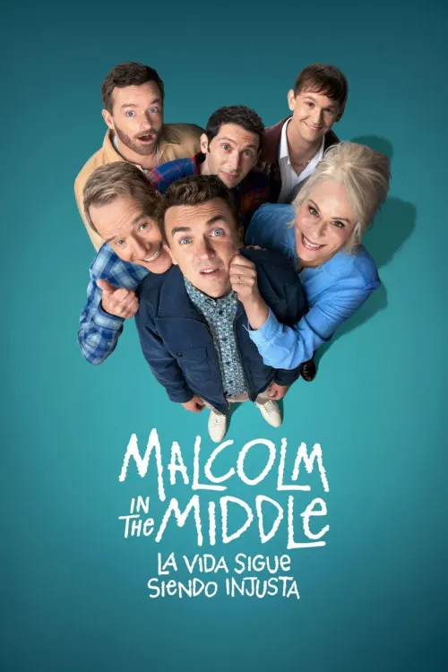
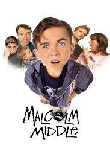
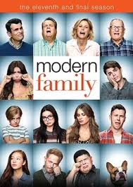
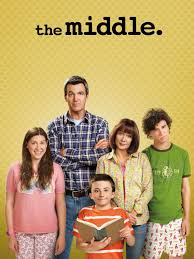
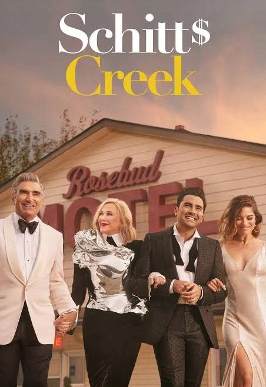

MALCOLM EL DEL MEDIO
Malcolm y su hija se ven envueltos en el caos familiar cuando Hal y Lois exigen su presencia para la fiesta de su 40 aniversario de bodas.
- Género: Comedia y drama
- Año: 2026
- Duración: 1 TEMPORADA
- Director: Ken Kwapis
- Productores/as: Gail Berman, Linwood Boomer, Bryan Cranston, Tracy Katsky, Natalie Lehmann, Arnon Milchan y Yariv Milchan
- Calificación general: 6.9/10
- Clasificación por edad: +15
- Plataformas: Disney+
Tráiler
REPARTO
FRANKIE MUNIZ
JANE KACZMAREK
BRYAN CRANSTON
JUSTIN BERFIELD
CHRISTOPHER MASTERSON
RESEÑAS DESTACADAS
Calificación: 8.0/10

SitcomFan dice:
Un regreso nostálgico y divertido.
"La serie logra revivir el caos familiar con el mismo humor ácido que hizo grande a *Malcolm in the Middle*. Los personajes mantienen su esencia y el guion está lleno de situaciones absurdas que funcionan."
Calificación: 7.0/10
RetroViewer dice:
Entretenida, pero con clichés.
"El humor sigue siendo efectivo, pero algunos episodios caen en fórmulas repetitivas. Aun así, es un placer ver a los personajes enfrentando nuevas etapas de la vida."
Calificación: 8.0/10
ComedyAddict dice:
El espíritu original sigue vivo.
"La serie conserva el estilo irreverente y las dinámicas familiares que hicieron icónica a la original. El ritmo es ágil y las actuaciones transmiten autenticidad."
Calificación: 6.5/10
CineGeek dice:
Buen humor, pero ritmo irregular.
"Algunos episodios son brillantes, pero otros se sienten más flojos. El humor absurdo sigue funcionando, aunque la narrativa a veces pierde fuerza."
Calificación: 5.0/10
OldSchoolFan dice:
Un regreso que no convence del todo.
"Aunque es agradable ver de nuevo a la familia, la trama principal se siente algo forzada. El humor está presente, pero esperaba un guion más sólido y fresco."
RELACIONADOS

MALCOLM IN THE MIDDLE
Calificación: 8.5/10
DURACION: 7 TEMPORADAS

MODERN FAMILY
Calificación: 8.4/10
DURACION: 11 TEMPORADAS

THE MIDDLE
Calificación: 7.5/10
DURACION: 9 TEMPORADAS
ARRESTED DEVELOPMENT
Calificación: 8.7/10
DURACION: 5 TEMPORADAS
